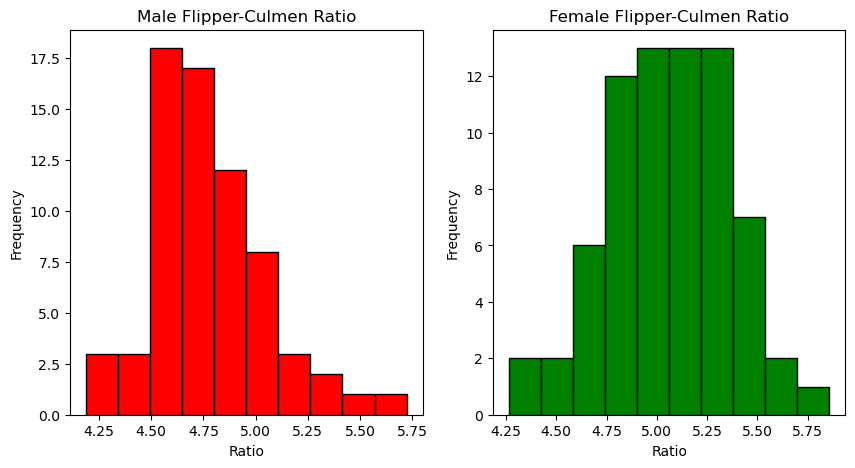
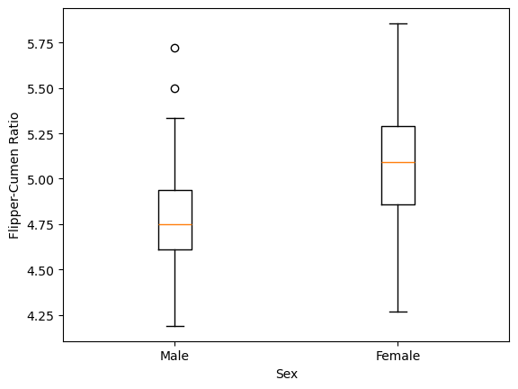
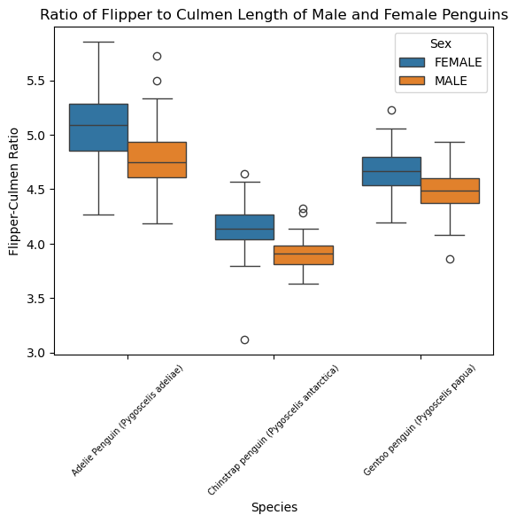
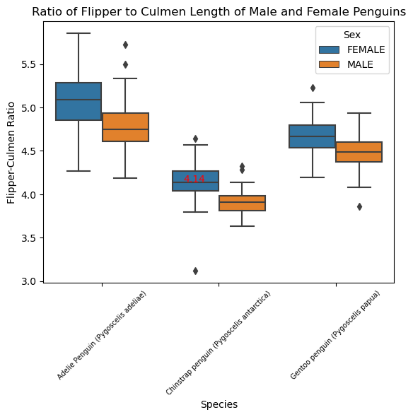
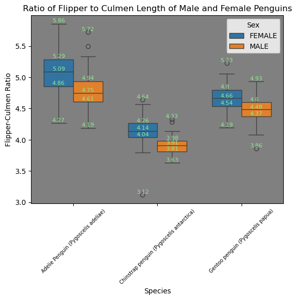

import pandas as pd
import matplotlib.pyplot as plt
import numpy as np
url = "https://raw.githubusercontent.com/pic16b-ucla/24W/main/datasets/palmer_penguins.csv"
penguins = pd.read_csv(url)Introduction
Hello! In this post, I’ll show you how we can make a nice visualization of the famous “Palmer Penguins” dataset by using the Pandas, Matplotlib, and Seaborn packages in Python. First we need to start by importing the packages that we need and obtaining the data, which we luckily have access to in a .csv file provided by professor Ko.
penguins.head()| studyName | Sample Number | Species | Region | Island | Stage | Individual ID | Clutch Completion | Date Egg | Culmen Length (mm) | Culmen Depth (mm) | Flipper Length (mm) | Body Mass (g) | Sex | Delta 15 N (o/oo) | Delta 13 C (o/oo) | Comments | |
|---|---|---|---|---|---|---|---|---|---|---|---|---|---|---|---|---|---|
| 0 | PAL0708 | 1 | Adelie Penguin (Pygoscelis adeliae) | Anvers | Torgersen | Adult, 1 Egg Stage | N1A1 | Yes | 11/11/07 | 39.1 | 18.7 | 181.0 | 3750.0 | MALE | NaN | NaN | Not enough blood for isotopes. |
| 1 | PAL0708 | 2 | Adelie Penguin (Pygoscelis adeliae) | Anvers | Torgersen | Adult, 1 Egg Stage | N1A2 | Yes | 11/11/07 | 39.5 | 17.4 | 186.0 | 3800.0 | FEMALE | 8.94956 | -24.69454 | NaN |
| 2 | PAL0708 | 3 | Adelie Penguin (Pygoscelis adeliae) | Anvers | Torgersen | Adult, 1 Egg Stage | N2A1 | Yes | 11/16/07 | 40.3 | 18.0 | 195.0 | 3250.0 | FEMALE | 8.36821 | -25.33302 | NaN |
| 3 | PAL0708 | 4 | Adelie Penguin (Pygoscelis adeliae) | Anvers | Torgersen | Adult, 1 Egg Stage | N2A2 | Yes | 11/16/07 | NaN | NaN | NaN | NaN | NaN | NaN | NaN | Adult not sampled. |
| 4 | PAL0708 | 5 | Adelie Penguin (Pygoscelis adeliae) | Anvers | Torgersen | Adult, 1 Egg Stage | N3A1 | Yes | 11/16/07 | 36.7 | 19.3 | 193.0 | 3450.0 | FEMALE | 8.76651 | -25.32426 | NaN |
penguins.info()<class 'pandas.core.frame.DataFrame'>
RangeIndex: 344 entries, 0 to 343
Data columns (total 17 columns):
# Column Non-Null Count Dtype
--- ------ -------------- -----
0 studyName 344 non-null object
1 Sample Number 344 non-null int64
2 Species 344 non-null object
3 Region 344 non-null object
4 Island 344 non-null object
5 Stage 344 non-null object
6 Individual ID 344 non-null object
7 Clutch Completion 344 non-null object
8 Date Egg 344 non-null object
9 Culmen Length (mm) 342 non-null float64
10 Culmen Depth (mm) 342 non-null float64
11 Flipper Length (mm) 342 non-null float64
12 Body Mass (g) 342 non-null float64
13 Sex 334 non-null object
14 Delta 15 N (o/oo) 330 non-null float64
15 Delta 13 C (o/oo) 331 non-null float64
16 Comments 26 non-null object
dtypes: float64(6), int64(1), object(10)
memory usage: 45.8+ KBWe see that we have 15 different variables, some of them being quantiative and others categorical. The 16th column of the data frame is called Comments and simply houses additional information about the specific penguins.
We also see that not all entries are present for every single penguin. Let’s see why this is:
penguins[penguins.iloc[:,:-1].isnull().any(axis=1)].head() #See next markdown block for explanation.| studyName | Sample Number | Species | Region | Island | Stage | Individual ID | Clutch Completion | Date Egg | Culmen Length (mm) | Culmen Depth (mm) | Flipper Length (mm) | Body Mass (g) | Sex | Delta 15 N (o/oo) | Delta 13 C (o/oo) | Comments | |
|---|---|---|---|---|---|---|---|---|---|---|---|---|---|---|---|---|---|
| 0 | PAL0708 | 1 | Adelie Penguin (Pygoscelis adeliae) | Anvers | Torgersen | Adult, 1 Egg Stage | N1A1 | Yes | 11/11/07 | 39.1 | 18.7 | 181.0 | 3750.0 | MALE | NaN | NaN | Not enough blood for isotopes. |
| 3 | PAL0708 | 4 | Adelie Penguin (Pygoscelis adeliae) | Anvers | Torgersen | Adult, 1 Egg Stage | N2A2 | Yes | 11/16/07 | NaN | NaN | NaN | NaN | NaN | NaN | NaN | Adult not sampled. |
| 8 | PAL0708 | 9 | Adelie Penguin (Pygoscelis adeliae) | Anvers | Torgersen | Adult, 1 Egg Stage | N5A1 | Yes | 11/9/07 | 34.1 | 18.1 | 193.0 | 3475.0 | NaN | NaN | NaN | No blood sample obtained. |
| 9 | PAL0708 | 10 | Adelie Penguin (Pygoscelis adeliae) | Anvers | Torgersen | Adult, 1 Egg Stage | N5A2 | Yes | 11/9/07 | 42.0 | 20.2 | 190.0 | 4250.0 | NaN | 9.13362 | -25.09368 | No blood sample obtained for sexing. |
| 10 | PAL0708 | 11 | Adelie Penguin (Pygoscelis adeliae) | Anvers | Torgersen | Adult, 1 Egg Stage | N6A1 | Yes | 11/9/07 | 37.8 | 17.1 | 186.0 | 3300.0 | NaN | 8.63243 | -25.21315 | No blood sample obtained for sexing. |
penguins[penguins.iloc[:,:-1].isnull().any(axis=1)]['Comments']0 Not enough blood for isotopes.
3 Adult not sampled.
8 No blood sample obtained.
9 No blood sample obtained for sexing.
10 No blood sample obtained for sexing.
11 No blood sample obtained.
12 Not enough blood for isotopes.
13 Not enough blood for isotopes.
15 Not enough blood for isotopes.
39 Nest never observed with full clutch. Not enou...
41 Not enough blood for isotopes.
46 Not enough blood for isotopes.
47 Sexing primers did not amplify. Not enough blo...
212 NaN
246 NaN
250 NaN
286 NaN
324 NaN
339 NaN
Name: Comments, dtype: objectIn the above code, we first select all entries using iloc besides the last column (because this has comments). Then we run the .isnull() method which checks if a given entry is NaN (True or False). The .any(axis=1) method will simply change this to True if any of the entries in one row True as a result of the .isnull() method, and we use axis =1 to specify that we mean across columns for a given row.
We see that for many of these samples, not enough blood was drawn to obtain proper measurements. Let’s get rid of those entries that contain any null measurements.
penguins2 = penguins[-penguins.iloc[:,:-1].isnull().any(axis=1)] #The minus sign negates the logical operation--that is, we only include entries where there are no null entries.penguins2[penguins2.iloc[:,:-1].isnull().any(axis=1)] #None left| studyName | Sample Number | Species | Region | Island | Stage | Individual ID | Clutch Completion | Date Egg | Culmen Length (mm) | Culmen Depth (mm) | Flipper Length (mm) | Body Mass (g) | Sex | Delta 15 N (o/oo) | Delta 13 C (o/oo) | Comments |
|---|
penguins2.head()| studyName | Sample Number | Species | Region | Island | Stage | Individual ID | Clutch Completion | Date Egg | Culmen Length (mm) | Culmen Depth (mm) | Flipper Length (mm) | Body Mass (g) | Sex | Delta 15 N (o/oo) | Delta 13 C (o/oo) | Comments | |
|---|---|---|---|---|---|---|---|---|---|---|---|---|---|---|---|---|---|
| 1 | PAL0708 | 2 | Adelie Penguin (Pygoscelis adeliae) | Anvers | Torgersen | Adult, 1 Egg Stage | N1A2 | Yes | 11/11/07 | 39.5 | 17.4 | 186.0 | 3800.0 | FEMALE | 8.94956 | -24.69454 | NaN |
| 2 | PAL0708 | 3 | Adelie Penguin (Pygoscelis adeliae) | Anvers | Torgersen | Adult, 1 Egg Stage | N2A1 | Yes | 11/16/07 | 40.3 | 18.0 | 195.0 | 3250.0 | FEMALE | 8.36821 | -25.33302 | NaN |
| 4 | PAL0708 | 5 | Adelie Penguin (Pygoscelis adeliae) | Anvers | Torgersen | Adult, 1 Egg Stage | N3A1 | Yes | 11/16/07 | 36.7 | 19.3 | 193.0 | 3450.0 | FEMALE | 8.76651 | -25.32426 | NaN |
| 5 | PAL0708 | 6 | Adelie Penguin (Pygoscelis adeliae) | Anvers | Torgersen | Adult, 1 Egg Stage | N3A2 | Yes | 11/16/07 | 39.3 | 20.6 | 190.0 | 3650.0 | MALE | 8.66496 | -25.29805 | NaN |
| 6 | PAL0708 | 7 | Adelie Penguin (Pygoscelis adeliae) | Anvers | Torgersen | Adult, 1 Egg Stage | N4A1 | No | 11/15/07 | 38.9 | 17.8 | 181.0 | 3625.0 | FEMALE | 9.18718 | -25.21799 | Nest never observed with full clutch. |
So, what to do now? Many species exhibit what’s known as sexual dimorphism, wherein members of one sex have markedly distinct features from those of another. It wouldn’t necessarily be surprising to see, for example, females and males from one species to have a different average mass.
However, it would be interesting to know if bodily proportions differ between sexes. For instance, males of one species might be larger and heavier than females, but if their bodies are of similar shape, then one would simply appear to be a smaller version of the other.
To this end, let’s compare the length of each penguin’s flipper to the length of it’s culmen. If you’re wondering what a culmen is, by the way…

We’ll start by eliminating any columns that we don’t want. For our purposes, we just want the Species (since proportions probably differ from one to the next), Stage (since at different points in their lifespan, penguins might have different shapes) Culmen Length (mm), Flipper Length (mm), and Sex.
penguins3 = penguins2[['Species', 'Stage', 'Culmen Length (mm)', 'Flipper Length (mm)', 'Sex']] #Select the columns we want
penguins3.head()| Species | Stage | Culmen Length (mm) | Flipper Length (mm) | Sex | |
|---|---|---|---|---|---|
| 1 | Adelie Penguin (Pygoscelis adeliae) | Adult, 1 Egg Stage | 39.5 | 186.0 | FEMALE |
| 2 | Adelie Penguin (Pygoscelis adeliae) | Adult, 1 Egg Stage | 40.3 | 195.0 | FEMALE |
| 4 | Adelie Penguin (Pygoscelis adeliae) | Adult, 1 Egg Stage | 36.7 | 193.0 | FEMALE |
| 5 | Adelie Penguin (Pygoscelis adeliae) | Adult, 1 Egg Stage | 39.3 | 190.0 | MALE |
| 6 | Adelie Penguin (Pygoscelis adeliae) | Adult, 1 Egg Stage | 38.9 | 181.0 | FEMALE |
set(penguins3['Stage']) #Coercing something into a sit displays its unique values.{'Adult, 1 Egg Stage'}set(penguins3['Species']){'Adelie Penguin (Pygoscelis adeliae)',
'Chinstrap penguin (Pygoscelis antarctica)',
'Gentoo penguin (Pygoscelis papua)'}We see that we have three distinct species of penguin, but only one stage (the 1 egg stage of adulthood), so we can eliminate this column.
penguins3.columnsIndex(['Species', 'Stage', 'Culmen Length (mm)', 'Flipper Length (mm)', 'Sex'], dtype='object')penguins3 = penguins3.drop('Stage', axis = 1)Okay, now we need to create a new column that contains the ratio of the flipper length to the culmen length.
penguins3['Flipper-Culmen Ratio'] = penguins3['Flipper Length (mm)'] / penguins3['Culmen Length (mm)']penguins3.head()| Species | Culmen Length (mm) | Flipper Length (mm) | Sex | Flipper-Culmen Ratio | |
|---|---|---|---|---|---|
| 1 | Adelie Penguin (Pygoscelis adeliae) | 39.5 | 186.0 | FEMALE | 4.708861 |
| 2 | Adelie Penguin (Pygoscelis adeliae) | 40.3 | 195.0 | FEMALE | 4.838710 |
| 4 | Adelie Penguin (Pygoscelis adeliae) | 36.7 | 193.0 | FEMALE | 5.258856 |
| 5 | Adelie Penguin (Pygoscelis adeliae) | 39.3 | 190.0 | MALE | 4.834606 |
| 6 | Adelie Penguin (Pygoscelis adeliae) | 38.9 | 181.0 | FEMALE | 4.652956 |
Visualization
Now that we have all of our column names in order, let us visualize our data properly. We’ll start by looking at Adelie Penguins.
penguinsAdelie = penguins3[penguins3['Species'] == 'Adelie Penguin (Pygoscelis adeliae)']adelie_male = penguinsAdelie[penguinsAdelie['Sex'] == 'MALE']
adelie_female = penguinsAdelie[penguinsAdelie['Sex'] == 'FEMALE']adelie_male.info()<class 'pandas.core.frame.DataFrame'>
Index: 68 entries, 5 to 151
Data columns (total 5 columns):
# Column Non-Null Count Dtype
--- ------ -------------- -----
0 Species 68 non-null object
1 Culmen Length (mm) 68 non-null float64
2 Flipper Length (mm) 68 non-null float64
3 Sex 68 non-null object
4 Flipper-Culmen Ratio 68 non-null float64
dtypes: float64(3), object(2)
memory usage: 3.2+ KBadelie_female.info()<class 'pandas.core.frame.DataFrame'>
Index: 71 entries, 1 to 150
Data columns (total 5 columns):
# Column Non-Null Count Dtype
--- ------ -------------- -----
0 Species 71 non-null object
1 Culmen Length (mm) 71 non-null float64
2 Flipper Length (mm) 71 non-null float64
3 Sex 71 non-null object
4 Flipper-Culmen Ratio 71 non-null float64
dtypes: float64(3), object(2)
memory usage: 3.3+ KBFor this species, there is nearly an indetical number of members of either sex, which is important for our visualization.
Recall from PIC16A that we can make an array of plots by using the subplots function from matplotlib. We’re going to first make an array of two empty plots, and then we’ll fill them with nearly identical histograms except for the fact that one contains the male data and the other the female data.
fig, axes = plt.subplots(nrows=1, ncols=2, figsize=(10, 5)) #Because we have a 1-d grid of plots, axes will have a 1-d index
axes[0].hist(adelie_male['Flipper-Culmen Ratio'], bins=10, edgecolor='black', color='red') #10 bins is probably fine if we have ~70 observations
axes[0].set_title('Male Flipper-Culmen Ratio') #axes[0] refers to the first (left-most) graph
axes[0].set_xlabel('Ratio')
axes[0].set_ylabel('Frequency')
axes[1].hist(adelie_female['Flipper-Culmen Ratio'], bins=10, edgecolor='black', color='green')
axes[1].set_title('Female Flipper-Culmen Ratio')
axes[1].set_xlabel('Ratio')
axes[1].set_ylabel('Frequency')Text(0, 0.5, 'Frequency')
We see that there may be somewhat of a difference–on average, the ratio for male penguins is lower than that of female ones. We can compare them side by side by using a box-plot. Matplotlib is convenient because it lets us put box-plots side by side by creating lists of data and labels, respectively.
plt.figure()
boxplot = plt.boxplot([adelie_male['Flipper-Culmen Ratio'],adelie_female['Flipper-Culmen Ratio']], labels = ['Male','Female'])
plt.xlabel('Sex')
plt.ylabel('Flipper-Cumen Ratio')Text(0, 0.5, 'Flipper-Cumen Ratio')
It indeed looks like that, for a given culmen length, females have longer flippers! We can look at the numbers more in detail by returning to our table and using the describe() method alongside groupby (which allows us to apply functions individually to certain groups, sex in our case).
round(penguinsAdelie.groupby('Sex')['Flipper-Culmen Ratio'].describe()[['min','25%','50%','75%','max']],2)| min | 25% | 50% | 75% | max | |
|---|---|---|---|---|---|
| Sex | |||||
| FEMALE | 4.27 | 4.86 | 5.09 | 5.29 | 5.86 |
| MALE | 4.19 | 4.61 | 4.75 | 4.94 | 5.72 |
Alright, now let’s apply what we’ve learned to all of the species included in the data set. We’ll actually start with the table of summary statistics above, except this time, we can group by both species and sex to create 6 total combinations. We’ll also include count since we don’t know if we have roughly similar numbers of each type of penguin:
round(penguins3.groupby(['Species','Sex'])['Flipper-Culmen Ratio'].describe()[['count','min','25%','50%','75%','max']],2)| count | min | 25% | 50% | 75% | max | ||
|---|---|---|---|---|---|---|---|
| Species | Sex | ||||||
| Adelie Penguin (Pygoscelis adeliae) | FEMALE | 71.0 | 4.27 | 4.86 | 5.09 | 5.29 | 5.86 |
| MALE | 68.0 | 4.19 | 4.61 | 4.75 | 4.94 | 5.72 | |
| Chinstrap penguin (Pygoscelis antarctica) | FEMALE | 34.0 | 3.12 | 4.04 | 4.14 | 4.26 | 4.64 |
| MALE | 33.0 | 3.63 | 3.81 | 3.91 | 3.98 | 4.33 | |
| Gentoo penguin (Pygoscelis papua) | . | 1.0 | 4.88 | 4.88 | 4.88 | 4.88 | 4.88 |
| FEMALE | 58.0 | 4.19 | 4.54 | 4.66 | 4.80 | 5.23 | |
| MALE | 60.0 | 3.86 | 4.37 | 4.48 | 4.60 | 4.93 |
We see there’s one member of the ‘Chinstrap penguin’ species whose sex is unspecified. Let’s remove that individual.
penguins3[(penguins3['Flipper-Culmen Ratio'] > 4.875) & (penguins3['Flipper-Culmen Ratio'] < 4.885)]| Species | Culmen Length (mm) | Flipper Length (mm) | Sex | Flipper-Culmen Ratio | |
|---|---|---|---|---|---|
| 89 | Adelie Penguin (Pygoscelis adeliae) | 38.9 | 190.0 | FEMALE | 4.884319 |
| 123 | Adelie Penguin (Pygoscelis adeliae) | 41.4 | 202.0 | MALE | 4.879227 |
| 251 | Gentoo penguin (Pygoscelis papua) | 42.8 | 209.0 | FEMALE | 4.883178 |
| 336 | Gentoo penguin (Pygoscelis papua) | 44.5 | 217.0 | . | 4.876404 |
penguins3 = penguins3.drop(336)penguin_summary = round(penguins3.groupby(['Species','Sex'])['Flipper-Culmen Ratio'].describe()[['count','min','25%','50%','75%','max']],2)
penguin_summary| count | min | 25% | 50% | 75% | max | ||
|---|---|---|---|---|---|---|---|
| Species | Sex | ||||||
| Adelie Penguin (Pygoscelis adeliae) | FEMALE | 71.0 | 4.27 | 4.86 | 5.09 | 5.29 | 5.86 |
| MALE | 68.0 | 4.19 | 4.61 | 4.75 | 4.94 | 5.72 | |
| Chinstrap penguin (Pygoscelis antarctica) | FEMALE | 34.0 | 3.12 | 4.04 | 4.14 | 4.26 | 4.64 |
| MALE | 33.0 | 3.63 | 3.81 | 3.91 | 3.98 | 4.33 | |
| Gentoo penguin (Pygoscelis papua) | FEMALE | 58.0 | 4.19 | 4.54 | 4.66 | 4.80 | 5.23 |
| MALE | 60.0 | 3.86 | 4.37 | 4.48 | 4.60 | 4.93 |
We see that we have fewer Chinstrap penguins in comparison to the other two species. At a first glance, it seems like the ratio is higher for females than males in all penguin species. Let’s try making box plots!
plt.boxplot(penguins3.groupby([['','Sex']])['Flipper-Culmen Ratio'])ValueError: Grouper and axis must be same lengthUh oh! This doesn’t work. We’re going to have to import the seaborn package, which interacts very well with matplotlib. (Thanks professor for demonstrating sns with lineplots in class!). For the documentation for boxplots, see the link below, but the syntax is quite simple as we just need to specify different groups (x), our variable of interest (y), and one more differentiation in the color (hue, which we set equal to sex):
https://seaborn.pydata.org/generated/seaborn.boxplot.html
import seaborn as snsplt.figure()
sns.boxplot(x='Species', y='Flipper-Culmen Ratio', hue='Sex', data=penguins3)
plt.xticks(rotation=45, ha='center', fontsize = 7) #Needed because otherwise the names go on top of each other.
plt.title('Ratio of Flipper to Culmen Length of Male and Female Penguins')
plt.show()
Indeed, for all of the species, it seems as if, on average, females have a greater flipper length to culmen length ratio. Wouldn’t it be great, though, if we could place some of those summary statistics that we saw earlier onto the plot itself?
penguin_summary| count | min | 25% | 50% | 75% | max | ||
|---|---|---|---|---|---|---|---|
| Species | Sex | ||||||
| Adelie Penguin (Pygoscelis adeliae) | FEMALE | 71.0 | 4.27 | 4.86 | 5.09 | 5.29 | 5.86 |
| MALE | 68.0 | 4.19 | 4.61 | 4.75 | 4.94 | 5.72 | |
| Chinstrap penguin (Pygoscelis antarctica) | FEMALE | 34.0 | 3.12 | 4.04 | 4.14 | 4.26 | 4.64 |
| MALE | 33.0 | 3.63 | 3.81 | 3.91 | 3.98 | 4.33 | |
| Gentoo penguin (Pygoscelis papua) | FEMALE | 58.0 | 4.19 | 4.54 | 4.66 | 4.80 | 5.23 |
| MALE | 60.0 | 3.86 | 4.37 | 4.48 | 4.60 | 4.93 |
We can use the plt.text() function to help us. I didn’t learn about this in PIC16A, but the syntax is very simple (see below for documentation). We need an x coordinate, a y coordinate, the text itself, and a color. The y coordinate is easily visible on our graph, but the x isn’t necessarily. In our case, the boxplots are centered around 0, 1, and 2. Below, for instance, is a plot where we show the median value of the ratio for female Chinstrap penguins.
plt.figure()
sns.boxplot(x='Species', y='Flipper-Culmen Ratio', hue='Sex', data=penguins3)
plt.text(.7,4.14,'4.14', color = 'red') #x coordinate, y coordinate, text, color
plt.xticks(rotation=45, ha='center', fontsize = 7) #Needed because otherwise the names go on top of each other.
plt.title('Ratio of Flipper to Culmen Length of Male and Female Penguins')
plt.show()
We can thus use a loop to do this for every single summary statistic for every single box plot. Let’s start by making a modified version of the summary table without the count variable:
penguin_summary_mod = penguin_summary.drop("count", axis=1)
penguin_summary_mod| min | 25% | 50% | 75% | max | ||
|---|---|---|---|---|---|---|
| Species | Sex | |||||
| Adelie Penguin (Pygoscelis adeliae) | FEMALE | 4.27 | 4.86 | 5.09 | 5.29 | 5.86 |
| MALE | 4.19 | 4.61 | 4.75 | 4.94 | 5.72 | |
| Chinstrap penguin (Pygoscelis antarctica) | FEMALE | 3.12 | 4.04 | 4.14 | 4.26 | 4.64 |
| MALE | 3.63 | 3.81 | 3.91 | 3.98 | 4.33 | |
| Gentoo penguin (Pygoscelis papua) | FEMALE | 4.19 | 4.54 | 4.66 | 4.80 | 5.23 |
| MALE | 3.86 | 4.37 | 4.48 | 4.60 | 4.93 |
To use a loop, we need to make use of the .iloc method provided to Pandas data frames, which allows us to select the at a specific point in a table. We see above that penguin_summary_mod has 6 rows (6 species-sex combinations) and 5 columns (5 summary statistics). The first coordinate in iloc is the row index and the second is the column index.
We need to more explicitly set x coordinates due to the positioning of the box plots on the graph. Both the text and the y coordinates should correspond to the value of the summary statistic.
plt.figure() #This delimits the end of the last figure and the beginning of this one
box = sns.boxplot(x='Species', y='Flipper-Culmen Ratio', hue='Sex',width = .7, data=penguins3 ) #I set width to .7 to make the boxes slightly skinnier
x_coords = [-.25,0.1,.75,1.1,1.75,2.1] #By experimenting, I was able to see that an offset of -.25 and +.1, respectively, centered the text.
for i in range(6): #Iterates through the 6 x coordinates
for j in range(5): #Iterates through the 5 columns of penguin_summary_mod
plt.text(x_coords[i],penguin_summary_mod.iloc[i,j]+.02,penguin_summary_mod.iloc[i,j], color = 'lightgreen', fontsize = 8) #I add .02 so that the text does not intersect the whiskers/edges.
box.set_facecolor('gray')
plt.xticks(rotation=45, ha='center', fontsize = 7) #Needed because otherwise the names go on top of each other.
plt.title('Ratio of Flipper to Culmen Length of Male and Female Penguins')
plt.show()
After playing around with the functions and methods for a bit, I was able to come up with this chart, which I think looks pretty nice.
Thanks for looking at my post :3